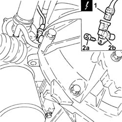
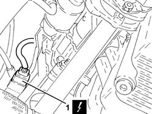
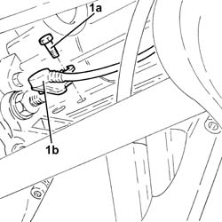

1060G20 Engine RPM SENSOR - R.R.
- Path
- Procedures > 10 ENGINE > 1060 DIESEL FUEL INJECTION > 1060G pressure pump electric control > 1060G20 Engine RPM SENSOR - R.R.
- Kind
- repair procedure (removal / refitting; the operation number is the code)
- Applies to
- all engines; all production periods
- Interactive page
- https://sloeber94.github.io/elrnDB-fDbl/en/#/2584415
Applies to: all engines; all production periods
 Removing
Removing
 Refitting
RefittingEnsure that the ignition key is in the OFF position, then disconnect the negative battery terminal.
 | Name | Connector |
|---|---|---|
- | Battery | A1 |
Carry out 7055B54 under-engine guard - r r .
1. Disconnect the electrical connection for the rpm sensor.
| Name | Connector |
|---|---|---|
1 | RPM sensor | K46 |
2. Undo the bolt (2a) and remove the engine rpm sensor (2b).

Applies to: all engines; all production periods
Removing
RefittingPosition the vehicle on the ramp.
Ensure that the ignition key is in the stop position, then disconnect the battery negative terminal.
| Name | Connector |
|---|---|---|
- | Battery | A1B |
Proceed with the removal 7055B54 under-engine guard - r r .
1. Disconnect the electrical connection for the rpm sensor.
| Name | Connector |
|---|---|---|
1 | RPM sensor | K46 |

Applies to: all engines; all production periods
Refitting
Removing1. Place the rpm sensor (1a) in its seating and secure it tightening the bolt (1b) to the specified torque.
 | Fastening | Component | Ø | Value (daNm) |
|---|---|---|---|---|
1b | Bolt | ENGINE RPM SENSOR | M6 | (Engine crankcase side) 0.8 ÷ 1.0 |
2. Connect the electrical connection for the rpm sensor.
| Name | Connector |
|---|---|---|
2 | RPM sensor | K46 |
Applies to: all engines; all production periods
1. Undo bolt (1a) and remove rpm sensor (1b).

Applies to: all engines; all production periods
Carry out 7055B54 under-engine guard - r r .
Connect the battery negative terminal.
| Name | Connector |
|---|---|---|
- | Battery | A1 |
Applies to: all engines; all production periods
Refitting
RemovingReplace the rear wheel rpm sensor in its housing and fix it using the bolt.
Connect the electrical connection for the rpm sensor.
Proceed with the refitting 7055B54 under-engine guard - r r .
Connect the battery terminal (-).
Remove the car from the ramp.